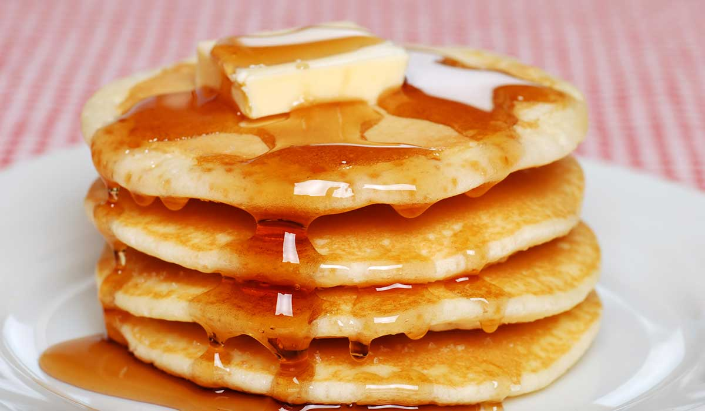

Hot Cakes

¿De qué se trata?
Sin detenerse a pensar que en realidad se trata de panqueques gordos, y que solo los llamás Hot Cakes porque te hace sentir importante, acá va una recetaza
¿Cómo se hace?
Ingredientes
- Huevos: 1.
- Aceite: dos cucharadas.
- Leche: 1 pocillo o media taza.
- Harina leudante: 1 taza o 130 g.
- Vainillín y sal: a gusto.
Preparación
- Mezclar la harina junto con el azúcar y la sal. Reservar.
- Batir los huevos junto con la leche y el aceite. Agregar el vainillín.
- Agregar a la mezcla anterior los secos, en forma de lluvia, y sin dejar de batir. Resulta una mezcla líquida pero espesa.
- Con un cucharón, llevar porciones de la mezcla a una plancha caliente y enmantecada. Cocinar hasta que estén dorados de ambos lados.